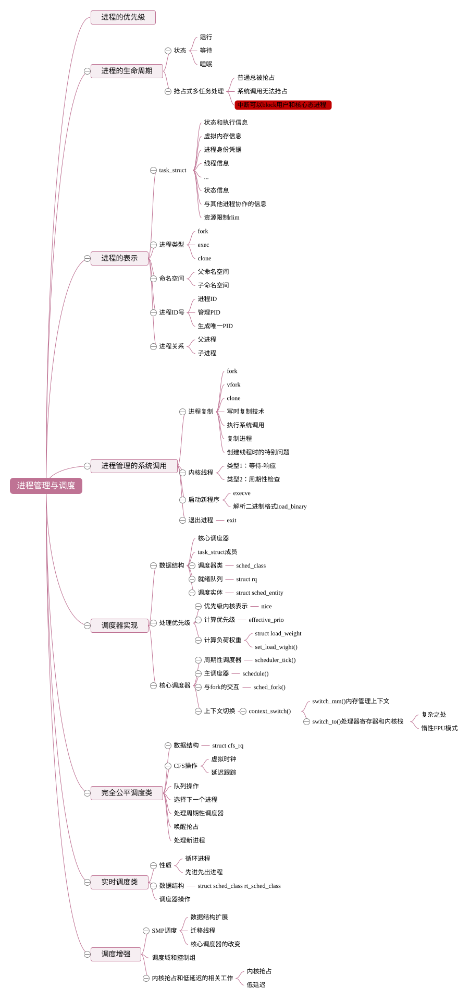

3.3. 进程管理与调度

- 3.3.1. 进程描述
- 3.3.2. 进程创建
- 3.3.3. 进程运行
- 3.3.4. 进程调度
- 3.3.5. 调度普通进程-完全公平调度器CFS
- 3.3.5.1. CFS调度器概述
- 3.3.5.2. CFS调度器负荷权重load_weight
- 3.3.5.3. 虚拟时钟vruntime和调度延迟
- 3.3.5.4. CFS队列操作
- 3.3.5.5. pick_next_task_fair选择下一个被调度的进程
- 3.3.5.6. task_tick_fair周期性调度器
- 3.3.5.7. 唤醒抢占
- 3.3.5.8. WAKE_AFFINE机制
- 3.3.6. thread_info与内核栈stack的关系